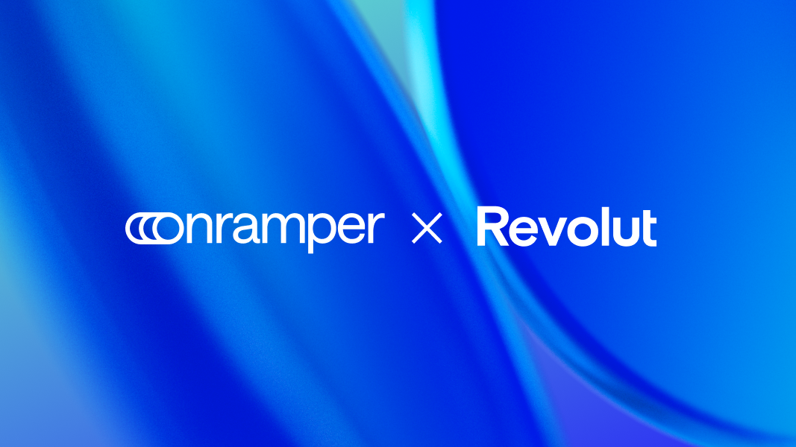
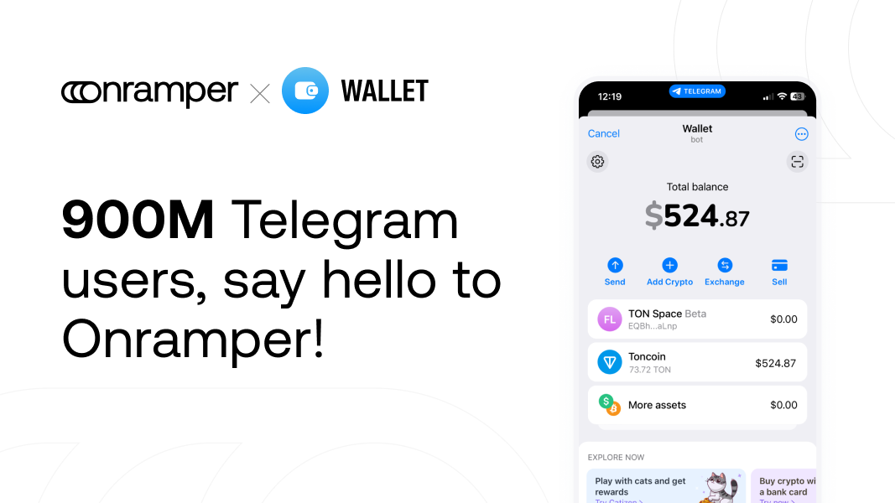
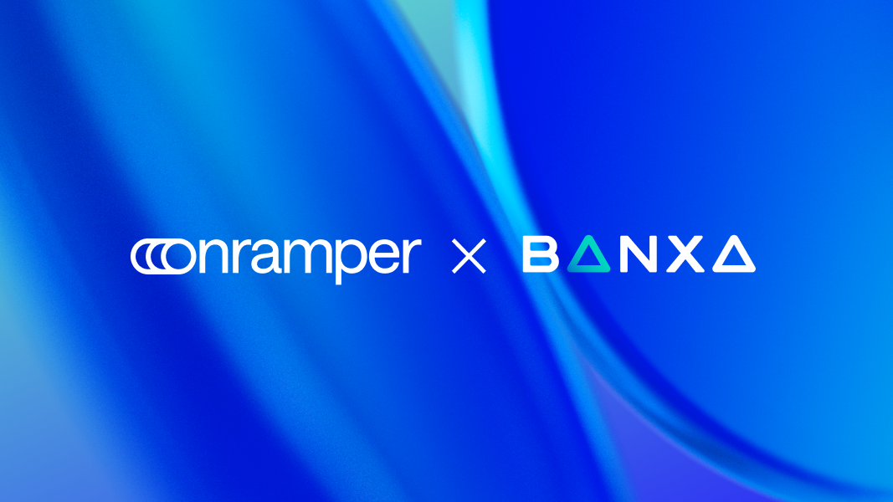
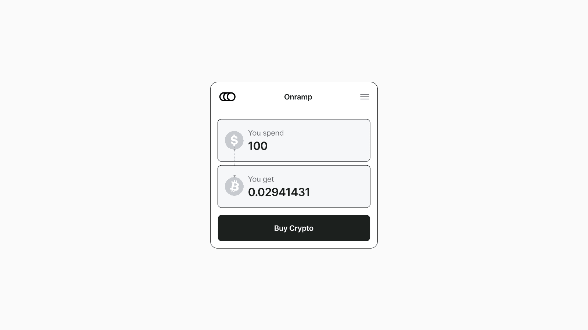
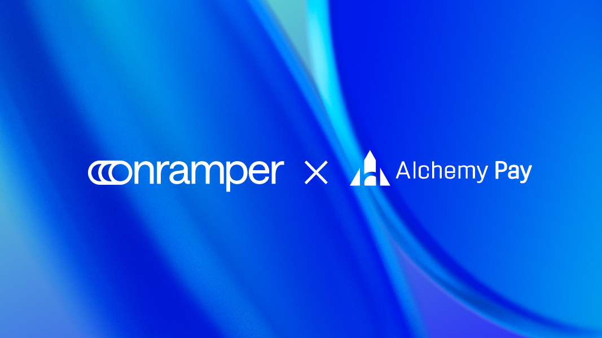
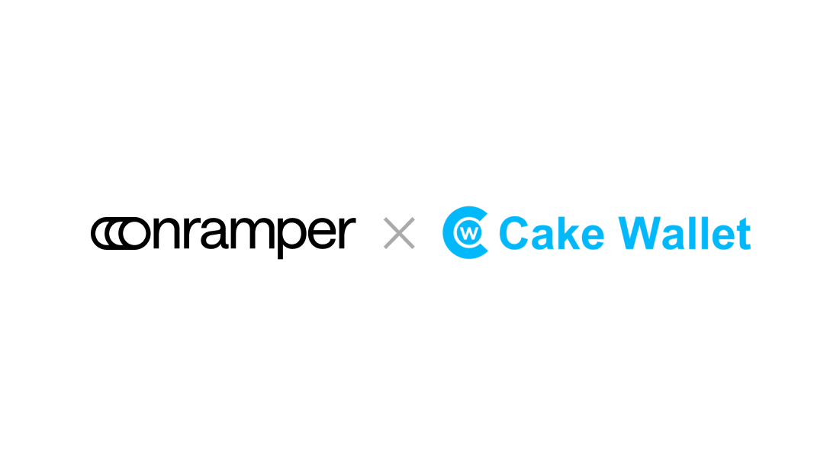
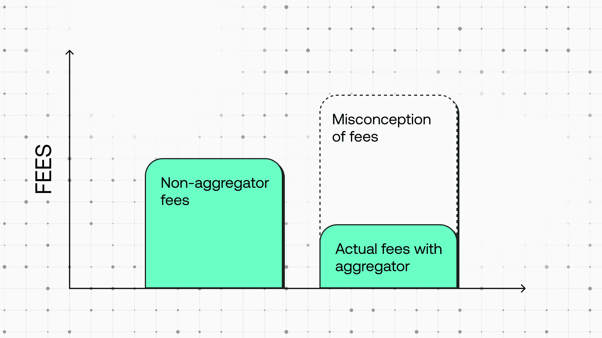
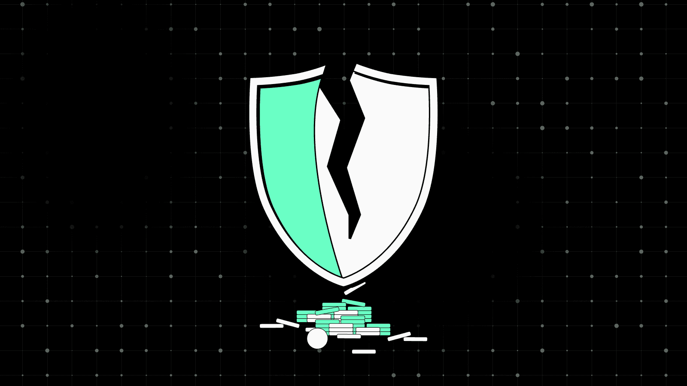
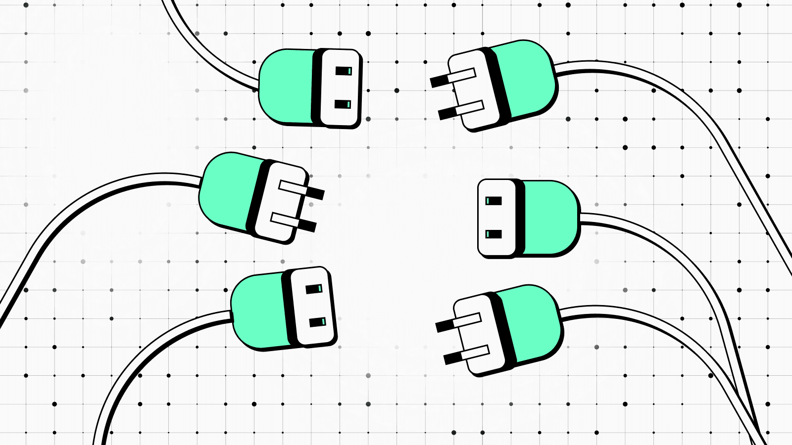
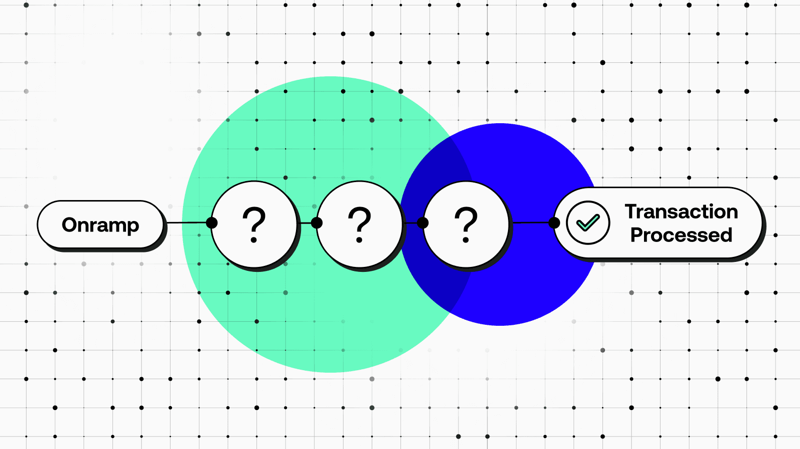

Blog


Onramper and Exodus Launch Cross-Chain Swaps
Onramper partners can now integrate aggregated crypto swaps directly within their applications.
February 20, 2025 – Onramper, the world’s leading fiat-to-crypto on-ramp aggregator, today announced the launch of its cross-chain, crypto-to-crypto swaps service. Now, Onramper partners can integrate swaps directly within their applications, empowering users to seamlessly swap between cryptocurrencies with the most advanced liquidity engine on the market.
With Onramper’s new swaps aggregator, termed “Onramper Swap,” users can enjoy compliant, secure, and lightning-fast swaps of 100,000 tokens across 50+ networks. Onramper’s premium swap engine is powered by XO Swap by Exodus, which sources users the best rates across 11+ liquidity providers.
“Cross-chain decentralized swaps products are traditionally inefficient and offer limited support across blockchains,” said Thijs Maas, CEO of Onramper. “Onramper Swap was developed to address these gaps by enabling seamless swap aggregation across diverse liquidity sources, delivering a faster and more efficient user experience. We're thrilled to partner with Exodus, a leading industry innovator, to bring this powerful swap engine to a wider audience.”
The launch of cross-chain swaps marks an expansion of Onramper’s existing partnership with Exodus. Exodus integrated Onramper’s on-ramp stack in 2024 to broaden the range of payment methods available to its users, including options like Interac in Canada and Unified Payments Interface (UPI) in India. Exodus users benefit from Onramper's sophisticated routing engines that recommend the best conversion in real-time.
"Cross-chain swaps should be effortless, and that’s exactly what this integration delivers. With XO Swap powering Onramper’s latest offering, users gain access to deep liquidity, competitive rates, and institutional-grade security—all built and tested at scale," said Kevin Wood, Director of Revenue Operations at Exodus.
Onramper’s swaps product arrives on the heels of its recent off-ramp launch, making it possible to integrate the world’s best off-ramps in a single sweep and ensuring global coverage, diverse payout methods, and best-price execution. Today, Onramper offers industry leading on-ramp, off-ramp, and swap aggregation solutions.
Onramper Swap: Features and benefits
Unparalleled choice: Onramper Swap supports 100,000 tokens across 50+ networks including EVM, Bitcoin, XRP, SVM, and Cosmos.
Competitive rates: Liquidity is sourced from 11+ sources, both centralized and decentralized, ensuring the best rates available.
Fully customizable: Partners can customize Onramper Swap to match their branding and add logos for a fully native experience.
Enterprise ready: Onramper Swaps is powered by XO Swap, which is built and tested at scale by the Exodus team. Onramper’s offering can be integrated in 10 minutes through a seamless plug-and-play process.
Secure: With nine years of experience, Halborn audits, and an active bug bounty program, XO Swap is powered by premium security.
About Onramper
Onramper is the leading fiat-to-crypto payments aggregator, providing a turnkey API-based solution for dynamically routing fiat-to-crypto onramp flows based on algorithms optimizing for conversion, fees and payment methods. Onramper’s platform allows users of clients to buy 2000+ digital assets, in over 190 countries with over 130 payment methods in 120 currencies, with advanced routing options and unified analytics. The company is based in the Netherlands. To learn more about Onramper, visit www.onramper.com.
About Exodus
Exodus is a financial technology leader empowering individuals and businesses with secure, user-friendly crypto software solutions. Since 2015, Exodus has made digital assets accessible to everyone through its multi-asset crypto wallets prioritizing design and ease of use.
With self-custodial wallets, Exodus puts customers in full control of their funds, enabling them to swap, buy, and sell crypto. Its business solutions include Passkeys Wallet and XO Swap, industry-leading tools for embedded crypto wallets and swap aggregation.
Exodus is committed to driving the future of accessible and secure finance. Learn more at www.exodus.com or follow us on X at www.x.com/exodus.

Mistakes wallets make when designing their on-ramp flows
Common UX flaws in wallets onramping flows.
When it comes to fiat on-ramping, UX is king. And while the UX of ramps providers certainly leave a lot to be desired - UI bugs, mediocre card conversion, clunky Know-Your-Customer processors - there’s also a lot that’s in control of the wallets that integrate these services.
Currency localization
Imagine going to a webstore where products are denominated in the wrong currency. You’ll think “this isn’t for me” and leave.
Yet across the top cryptocurrency wallets, it is common for fiat currencies to not be localized. In fact, in most of the top 10 wallets in the space, I had to manually try and find a way to change the fiat currency.
Some will argue that lack of localization of fiat currencies exists for privacy reasons. But users looking to buy crypto with fiat have to go through Know-Your-Customer (KYC) anyway, which includes filling in their physical address - and often even uploading their passport.
Of course, whether a ramp provider’s services can even be used depends on both fiat currency and country support, so providing a list of ramp options without localisation just results in sending users down dead paths.

Default amounts
In a number of wallets - including leading wallets like MetaMask and Phantom - the default amount displayed is 0. Have you ever wanted to buy $0 worth of cryptocurrency? Probably not.
So how should we think about default amounts?
In my view, the best way to approach default amounts is to use a round number that is higher than the median purchase.
This median changes from country to country, as the average transaction amount in Nigeria, for example, will be lower than in the United States. Therefore, the median should be determined on a country-by-country basis.
The amount displayed should adjust depending on the fiat currency, as at the time of writing every dollar is worth 1577 Nigerian Naira (not a very round number).
Payment method choice
Ask people from the Netherlands, India, Nigeria, the United States and the Philippines which payment methods they want to use to buy crypto, and each will give an entirely different answer.
Yet, the majority of the top cryptocurrency wallets do not support most of the payment methods that will be mentioned.
Other wallets have created flows with ramp providers that support many APMs, without creating a “payment method” selector. This results in the user not being able to compare the difference in price between payment methods.
In addition, any onramp provider that has more than 10 payment methods will be able to tell you how this quickly results in integrations becoming outdated, with the list of payment methods displayed to the user not reflecting what is actually supported (see below).
Payment method localization
For those wallets that do have a range of local payment methods enabled, credit cards are often selected as the default option, despite cards having notoriously bad conversion rates when it comes to buying cryptocurrencies.
Needless to say, it is important to localise payment methods and recommend the best payment methods to users (so important, in fact, that I’ve dedicated a separate article about it here).

Closing thoughts
It is time for us to build flows users enjoy. Next week I will cover on-ramp selection in part 2 of this series.
I invite everyone - client or not - to have OnRamper analyze your app. We’ll do a free analysis to identify the good, the bad, and the ugly. Schedule a call via the link above and reply with: "Please analyze my current setup."

Why you should not rank onramps based on fees
Why Priced-based ranking is not the best choice?
Price-based ramp ranking sounds logical—cheaper is better, right?
Wrong. This approach is deeply flawed, and it’s hurting your platform more than you realize. Why?
Because ramp providers are gaming the system.
They know that by initially offering the lowest price, they can move to the top of your list. But here's the kicker: once they’ve secured the transaction, they hike the price during the transaction flow, leaving your users to pay more than they bargained for.

It’s an all-too-common occurrence. In fact, if you’re a top-tier wallet, it’s happening to you right now, and it’s probably being done by multiple ramp providers.
At Onramper, we call this sneaky practice “quote spoofing”, and it’s been happening across the industry for years.
Here’s how you can check if this happens in your app:
- Enter an amount of fiat to buy for, and go to the ramp comparison screen.
- Write down the amount of crypto offered by each ramp provider, and open all onramp widgets.
- Click-through to the end of the transaction in each widget, and write down the final crypto received.
- Compare the amounts from step 1 and step 3.
Trust erosion and lost users
What’s the real impact of quote spoofing? First and foremost, it breaks trust.
Your users come to your platform expecting transparency and the best experience to access crypto. But when they see prices increase mid-transaction, they feel deceived. Shattered trust isn’t easy to repair.
As conversion rates drop, so does your onboarding volume. That’s a direct hit to your growth, all because price was prioritized over actual conversion rates and user experience.
What’s worse, this practice doesn’t just frustrate users—it also makes their transactions more expensive, which pushes them away even more.
Most ramp providers have been guilty of quote spoofing at one time or another. It’s not because they’re inherently bad actors, but rather because price-based ranking encourages this behavior.
The problem is systemic. Perverse incentives force ramp providers to prioritize getting picked over being transparent. To insiders, it is a known problem, and one that Onramper has been tackling for years.
Onramper Terminal: A window into the problem
Onramper's clients have been made aware of this practice for a long time. Thanks to the Onramper Terminal, they have insights into the accuracy of quotes and effective fees, giving them the information they need to prevent quote spoofing.
The Onramper Terminal shines a light on the murky tactics some ramp providers use, providing your platform with the data needed to call them out or change routing for bad actors.

In the Fee Transparency Dashboard that comes with Onramper Enterprise, for example, you get perfect insight into ‘quote accuracy’, showing exactly which ramp providers are guilty of quote spoofing in your ramps marketplace and by how much.
The Onramper Terminal also gives you visibility into how ramps are actually performing. Instead of just relying on price, you can see metrics on quote accuracy, conversion rates, payment authorization rates, and payment methods across your entire ramps stack.
This allows you to offer your users an experience that’s not only fair but also optimizes for successful transactions.
User loss = lower conversions
Here’s the bottom line: relying on price alone to rank ramps is costing you. It's ripping off your users and results in ramp providers gaming the system and sub-optimal UX.
When users abandon transactions halfway through because of price spikes, your conversion rates plummet.
Onramps offering lowball quotes just to get picked initially, only to increase prices later, results in more than just bad user experience—it results in fewer completed lifetime transactions.
And the fewer transactions that go through, the fewer users you onboard. In short, it’s the opposite of what your platform needs.
Moving beyond price-based ranking
So, what’s the fix?
It’s simple: rank based on more factors than price alone. Platforms that include other metrics, like expected success rates, KYC friction, and payment method compatibility alongside price see higher user satisfaction and better conversion rates.
Imagine offering your users the best onramp for their specific situation, not just the one offering the lowest (and often misleading) quote.
The result? A better experience for your users and higher completion rates for you. Onramper is leading the charge by providing advanced onramp routing based on pricing, success rate data and user-friction.
The best part? Our onramp recommendations boost your conversion rates beyond what you think is possible. (More on this in next week’s post!)
Curious to your thoughts,
Thijs
thijs@onramper.com

Revolut joins forces with Onramper to deliver seamless fiat-to-crypto swaps
We've teamed up with Revolut Ramp to deliver even smoother onboarding.
Onramper and Revolut have announced a strategic partnership to broaden access to crypto for users across the UK and European Economic Area (EEA).
Through this collaboration, Onramper adds yet another top-tier solution to its growing fiat-to-crypto onramp aggregator, which, at the time of announcement, boasts an impressive lineup of 19 onramps and support for over 130 fiat payment methods.
Onramper’s extensive geographic coverage is complemented by sophisticated routing engines that recommend the best conversion for users in real-time — maximising the odds of a successful transaction and ensuring that users receive the most crypto for their fiat.
Global financial app Revolut, which has more than 40 million customers worldwide, has been making inroads into the crypto space since 2017, and is on a mission to become the go-to financial app for crypto investors, providing them with a safe and accessible place to trade.
Its latest product, Revolut Ramp, is a seamless fiat-to-crypto on-ramp that enables users to use a range of currencies to purchase dozens of cryptocurrencies within seconds. Existing Revolut customers can skip any verification checks as the company utilises existing verification from within the Revolut app.
When customers pay directly from their Revolut account, the fiat transaction is outside of the scheme card rails and entirely within Revolut's ecosystem. This increases the success rate and allows Revolut to offer competitive prices without being burdened by additional card processing costs.
Revolut Ramp also offers an integrated Know Your Customer (KYC) process that non-Revolut customers can complete in just a few minutes. This process uses the same infrastructure that has been used to verify the identities of millions of Revolut users in a seamless and low-friction way.
Today, Revolut Ramp is the simplest method for both existing and non-Revolut users to bridge into the world of Web3 — and a must-have for wallets seeking to broaden their coverage. Already, the solution has been adopted by top platforms in the crypto space, like MetaMask. This integration will allow easy roll-out to Onramper’s extensive client base.
“Since our inception, we’ve been laser-focused on giving businesses and their users as many options as possible,” said Thijs Maas, CEO of Onramper. “Revolut Ramp is a real asset in our stack: it’s got great tech, strong coverage, and a stellar reputation in both traditional financial and crypto circles.”
Onramper’s 2023 report, The three best-kept onramping secrets, highlights the importance of a multi-onramp strategy: though so many solutions exist, none have the scope to ensure global coverage that reflects the payment preferences of local users. The result? An alarmingly high number of failed transactions.
“Together with Onramper, we’re pleased to be making Revolut Ramp even more accessible to a broad roster of top crypto players,” added Emil Urmanshin, Director, Crypto & New Bets, at Revolut. “Our on-ramp solution ensures even higher success rates for transactions and low fees for all customers. We want to empower people to take more control of their finances by giving them safe, convenient, and seamless access to the world of Web3 — and this is just another key step in our mission to make this a reality.”
About Onramper
Onramper is the leading fiat-to-crypto onramp aggregator. Its infrastructure seamlessly integrates 19+ of the top onramps, offering unmatched global coverage and the lowest fees.
Central to Onramper’s stack are its dynamic transaction routing engines: in real-time, these assess a wide range of factors to match users with the best onramp for their needs. On average, Onramper improves conversion rate by 70% — all while ensuring users pay lower fees.
About Revolut
Revolut is a global fintech, helping people get more from their money. In 2015, Revolut launched in the UK offering money transfer and exchange. Today, more than 40 million customers around the world use dozens of Revolut’s innovative products to make more than half a billion transactions a month.
Across our personal and business accounts, we give customers more control over their finances and connect people seamlessly across the world. www.revolut.com
There are several ways to buy and sell crypto on Revolut. Customers can set up a stop or limit order so they don’t have to time the market or use the Recurring Buy feature to average out volatility.
Don’t invest unless you’re prepared to lose all the money you invest. This is a high‑risk investment and you should not expect to be protected if something goes wrong. Take 2 mins to learn more.
As part of Revolut’s goal to be the safest place to trade, use and learn about crypto, Revolut regularly communicates with customers that crypto tokens are volatile assets and prices can change quickly. Revolut believes in widening access to crypto and also recognises that it may not be appropriate for everyone, so the company encourages its customers to research the various cryptocurrencies and the risks and opportunities before buying or selling. Customers should review independent sources and learn the differences between tokens as well as considering their personal circumstances when buying or selling crypto. Cryptocurrencies are unregulated and funds are not protected by investor compensation schemes. Tax could be payable on trading gains.

Onramper x Wallet in Telegram: building the TON onboarding rails
We're working with Wallet in Telegram to make crypto onboarding easier for 900m users worldwide.
We're working with Wallet in Telegram to make crypto onboarding easier for 900m users worldwide.
By integrating the premier fiat-to-crypto aggregator, Wallet in Telegram has chosen the best solution for catering to a global audience with diverse payment method preferences and requirements.
Our stack features 19 onramps and 140+ payment methods, ensuring comprehensive and redundant global coverage for one of the biggest players in instant messaging. Its ultimate goal? To make crypto easily accessible to everyone, everywhere.
In our 2023 report, The three best-kept onramping secrets, we unveiled some alarming statistics about the failures of fiat-to-crypto swaps: even onramps that claim to offer global coverage have sub-1% success rates in countries they claim to support.
We attribute this to a lack of capacity in onramps, a lack of local payment method support, and an over-reliance on card payments. With our solution, these problems are addressed: more onramps means a greater range of local payment methods, meaning higher success rates for users across the world.
“I’m particularly excited about this partnership,” said Thijs Maas, CEO of Onramper. “We’re focused on mass adoption, which means streamlining the checkout process for crypto and non-crypto users alike. Wallet in Telegram caters to both of these audiences. Together, we have a tremendous opportunity to further adoption with an intelligent routing solution wrapped in a slick user experience.”
Thus far, we've played a pivotal role in evangelizing TON (and TON-based USDt) to our onramp partners, ensuring that as many paths into TON exist for as many users possible around the world — not just within Wallet, but on any major platform that supports these onramps.
Coinify, Guardarian, BTC Direct, TransFi, Onramp Money, Neocrypto and Alchemy Pay are among the onramps in the Onramper widget that support TON. Meanwhile, TON-based USDT is available via UTORG, Unlimit Crypto, Fonbnk, Banxa, Onramp Money, Neocrypto and Alchemy Pay. Unique payment methods for all onramps supporting TON include Apple Pay and Astropay.
“Working with Onramper provided us the opportunity to offer our users over one hundred payment methods with one single integration, accelerating our time to market and mitigating dev resources.” said Victor Mendes, Head of BD at Wallet in Telegram.
The Onramper widget — leveraged by the likes of Coinbase Wallet, Solflare and Exodus — blends a minimalist, intuitive UI with sophisticated routing engines that ensure users are always matched with the best onramp for their needs. On average, it delivers 2.5% more crypto to users than other solutions.
Crucially, our commitment to broadening access (via partnerships with a range of region-specific onramps) makes the stack an unparalleled offering for ushering in mass adoption.
“Telegram's expansive user base of 900 million worldwide underscores the importance of enabling fiat onramps in numerous countries and supporting diverse payment methods,” said Halil Mirakhmed, CSO at The Open Platform and Wallet. “Through the integration with Onramper, we aim to extend payment support to the majority of our valued customers.”
This partnership goes beyond the provision of a cutting-edge fiat-to-crypto onramp aggregator. Together, Onramper and Wallet in Telegram are meaningfully laying the groundwork for the growth of a vibrant Web3 community on one of this year’s most anticipated protocols.
With The Open Network (TON) gaining traction, Wallet in Telegram is uniquely positioned to onboard the next wave of crypto users. With 900m participants already in its ecosystem, the instant messaging titan has an unmatched opportunity to provide the rails into Web3 for millions around the globe, all through a Web 2.0 interface that they’re already familiar with.
About Wallet in Telegram
Wallet is the definitive user-friendly platform for efficiently managing crypto assets. By harnessing the power of The Open Network (TON) Blockchain and massive distribution through Telegram Messenger, Wallet has created a streamlined and accessible gateway to crypto for the messenger's 900m user base. Wallet users can effortlessly store, send, and receive digital assets, all on a single autonomous platform within the familiar interface of Telegram. Managing crypto is now as simple as sending a message.

Onramper’s Q1 2024 roundup 🎉
New partners. New onramps. New features. Here’s what’s been cookin’ over the past three months.
Time flies when you’re perfecting fiat-to-crypto onboarding! Here’s what we’ve been up to over the past few months — and what you can expect going forward.
Client spotlight: Solflare 📈
Everyone’s favorite Solana wallet just got a massive upgrade.
Within a month of integrating Onramper, Solflare boosted its volumes by an astounding 280% — all thanks to our sophisticated routing engines and extensive support for alternative payment methods.
But don’t just take our word for it. Check out the case study here to dive deep into the data.
New partners 🤝
The latest collabs we’re thrilled about:
Telegram Wallet
A player that needs no introduction. From the instant messaging titan comes Wallet: a mini-app, right within Telegram, that allows users to easily send, receive and store their crypto.
With all eyes on TON, it couldn’t be a more exciting time to partner with the visionaries behind it.
CoinStats
The must-have dashboard for crypto power users — enabling them to easily visualize DEX and CEX positions through a single portal.
With us in their corner, CoinStats now have robust fiat-to-crypto rails embedded right in their platform.
Delta Exchange
Futures and options platform Delta Exchange delivers a versatile product suite, ideal for all kinds of trailers. Thanks to Onramper, buying crypto via their platform is simple.
New onramps 💱
We’ve added to our all-star lineup with two more region-specific onramps — bringing you a total of 18 solutions, all via a single integration.
Koywe
A LATAM-focused solution with great local payment method support and high success rates.
DFX
Zug-based DFX is ranked among the top onramps for Swiss users.
Binance P2P
A P2P gateway with support for a vast range of currencies and payment methods.
Coinify+
A personal, over-the-counter solution for users trading large amounts.
Stay tuned for details on Stripe and Revolut integrations… 👀
We speak your language 🗣️
We’ve added widget localization!
If an onramp supports your platform’s language, you can now have it automatically adjust come transaction time.
A new look for the docs 📄
Get up and running even quicker with our refreshed docs — serving up the information you need to integrate and customize the Onramper widget through a sleek, intuitive portal.
Supercharge your onboarding game 💯
18+ onramps. 130+ payment methods. Zero effort.
Whether you’re building the next great crypto platform, the last thing you want is to waste time reinventing the wheel.
Focus on what counts — and let the onramping experts take care of the rest. Try Onramper for free now!

Banxa joins forces with Onramper
Our latest partnership means even more options for your users. Learn why we're thrilled to team up with Banxa in our latest blog.
The more onramps you can offer your users, the better their experience.
At Onramper, we aim to make multi-onramp support the default across the industry. To do so, we’re constantly teaming up with the best of the best to provide your users with more fiat currencies, more cryptocurrencies and more local payment methods.
We’re delighted to announce that we’ve partnered with Banxa: a global team of crypto innovators on a mission to build the infrastructure to enable crypto transactions for merchants and their consumers.
“Banxa is excited to join Onramper’s mission to provide users with its extensive range of payment options,” said Holger Arians, CEO of Banxa. “In our experience, removing barriers to accessing crypto is instrumental to providing a better overall experience for all types of users.”
Among their products is a robust onramping solution which currently serves various DEXs, centralized exchanges and wallets in the space. Banxa supports transfers across Web3, and its partners praise its ability to deliver local processing and local alternative payment methods (APMs) on a global scale.
At a glance, Banxa supports:
- 34+ fiat currencies
- 104+ cryptocurrencies
- 16+ payment types
Already an Onramper customer? Banxa is now available via the widget and API.
Not a customer yet? Find out more about our widget here — which provides access to Banxa (and a vast range of other onramps) to ensure truly global coverage.

How Web3 businesses can onboard more users with integrated onramps
The next iteration of the Internet promises an exciting future for individuals the world over. Here's how you can maximize your reach.
The next iteration of the Internet promises an exciting future for individuals the world over.
Powered by decentralized technologies, Web3 is set to change everything — from the payment methods we use online to the ways we think about ownership of art, data and even real-world assets.
With such a shift, however, comes a learning curve. The mainstream hails from the Web 2.0 era, where things work differently — and concepts such as self-sovereignty and private keys are totally foreign.
To onboard the masses, overcoming the hurdles associated with these new mental models is critical. We believe that starts with onramping.
Why are integrated fiat-to-crypto onramps so important?
In a perfect world, new users land on your Web3 site and can immediately start interacting with it. That may be the case for those already in crypto, but what about those that aren’t?
For a user new to crypto, there’s the lengthy ‘getting started’ phase. Web3 wallets make it relatively easy to manage funds and interact with platforms, but obtaining crypto can be an overwhelming endeavor. The often-recommended route — registering for a centralized exchange — is a lengthy process which requires users to:
- Submit KYC documentation
- Wait for verification
- Figure out how to buy and then withdraw crypto
Once this is all done, only then can they start interacting with your platform.
An integrated onramp can make things much easier. For starters, it lives on your site — and it’s reminiscent of the checkout flows that Web 2.0 users are already familiar with.

It’s also a lot more intuitive: users select their preferred payment method and their desired input/output currencies, before being guided through the flow to receive their crypto. Before they know it, they’re ready to interact with your platform — and they haven’t been sent to an off-site exchange.
Web3: more than crypto
Arguably, Web3 has a much wider appeal than cryptocurrency by itself.
The likes of Bitcoin and ether appeal primarily to those interested in the financial and technological aspects of digital money. But the all-encompassing Web3 umbrella spans all kinds of industries — and it even represents something of a cultural shift, as decentralized technologies will fundamentally alter the way we interact in the digital world.
The challenges of this shift are, granted, complex. To frictionlessly transition users from Web 2.0 to Web3, we need to keep their existing mental models in mind by designing experiences that mirror the processes of the current Internet.
There are many areas where UI/UX can be improved. However, we’re most interested in the fiat-to-crypto flow — and making it easy for users to onboard into Web3. For us, this means delivering an experience that wouldn’t be out of place on an ecommerce website: one that’s fast, one that’s intuitive, and one that moves the user from Point A to Point B as seamlessly as possible.
Onboard users effortlessly with Onramper
With just eight lines of code, you can immediately integrate over 15 of the industry’s best onramps into your platform.
Onramper’s widget automatically pairs your users with the onramp most likely to guarantee transaction success, time and again, thanks to our proprietary dynamic transaction routing engines.
In case you missed it, our recent report, The three best-kept onramping secrets, revealed that single-onramp solutions lead to alarmingly high failure rates. With a fiat onramp aggregator, however, you can remain confident that your users are matched with the best option for them — without any added effort.
120+ payment methods in 180+ countries. Never worry about onboarding users again with Onramper’s set-and-forget widget. Get in touch to find out more.

Why use a fiat-to-crypto onramp aggregator?
One onramp will never be enough. Neither will five. An aggregator can solve the inherent issues the industry faces today.
The promise of the fiat-to-crypto onramp is an enticing one: with minimal effort, your platform can integrate a widget that allows your customers to turn their fiat money into bitcoin, ether or any other crypto.
In practice, however, onramping is far from the seamless process it’s made out to be. Your provider doesn’t want you to know this, but an estimated 50% of transactions fail after KYC has been passed.
That’s a little alarming, isn’t it? It gets worse. Our October 2022 report identified that abandonment rates during the checkout process can reach as high as 90%.
Why aren’t the onramps working?
To be clear, they do work. And when they do, they’re an excellent way to get new customers up and running in the crypto ecosystem. The problem is getting them to work consistently.
It’s impossible for any given onramp to cater to all demographics. With so much global variance in payment methods, proof of address/identity documents, and fiat currencies used, every solution must make trade-offs.
Unfortunately, those trade-offs come at the expense of user experience for a majority of customers — who are repeatedly hit with the dreaded ‘transaction failed’ error.
Aggregation fixes this
Simply switching your provider won’t solve an issue that impacts every player in the industry.
Introducing multiple onramps could reduce dropouts, in theory, but it’s an expensive solution that isn’t guaranteed to work:
- Integrating and maintaining several stacks eats a significant amount of resources
- Customers will still need to find an onramp that works for them via trial and error
The right aggregator can remove these points of friction: resulting in lower integration costs for you, and streamlined onboarding into the crypto ecosystem for your customers.
The secret sauce: dynamic transaction routing
At the heart of aggregation lies an engine that can identify (and understand) your customers profile and their needs — their location, the fiat currency they’re using, the KYC documentation they have available, etc. The engine takes these factors into account before intelligently matching them with the onramp most likely to ensure a successful transaction.
Our research shows that there are 70+ such inputs that can influence a fiat-to-crypto swap. To be effective, the aggregator’s engine must consider them all.
Truly global coverage
Want consistent completion in fiat-to-crypto transactions? Increase access to local payment methods.
Across the board, these routes are tied to higher success rates. But, frustratingly, there isn’t a single onramp that can provide access to them all — different solutions excel in local payment methods for different regions.
By aggregating them, you instantly broaden your access to location-specific rails. Which, in turn, allows you to equip your customer segments with the best path to crypto available.
Lower fees. Higher outputs.
You might know that your onramp’s fee isn’t actually representative of what your customers are paying. Far from it.
When presented with a single onramp, they’re tied to its conversion rates, its bid-ask spreads and its chosen network fees. All of these hidden costs add up to take a chunk out of the amount of crypto received.
Here, aggregation works as it does on any booking website: it weighs up the different onramps and (all) their rates to calculate the cheapest option — meaning that your customers get the best bang for their buck on every transaction.
Onboarding made easy
The crypto landscape can be difficult enough for newcomers to grasp. Their very first step shouldn’t be a massive hurdle.
With a fiat onramp aggregator, it won’t be. You’ll make sure your customers are repeatedly enjoying seamless swaps (for better rates, too) — all while reducing your own technological overhead.
Want to find out how Onramper can turbocharge your success rates with streamlined aggregation? Book a call with our experts today.

Fee-based onramp routing is costing you business
The most popular method for connecting users to onramps is deeply flawed — for a number of reasons. Here's why you should be considering alternative solutions.
My user has multiple onramps available. I should automatically point them towards the one that offers the lowest fees.
On the surface, this is a great decision. It makes perfect sense to want to provide your users with the lowest fees, as it results in more crypto received.
In practice, though? The transactions fail the majority of the time. And, even when they do succeed, the fees aren’t what you think.
What’s up with onramp fees?
The top providers offer some very attractive percentages when it comes to their fees. Dig a little deeper, however, and you’ll find out that these figures only refer to the onramp’s cut.
In other words, there are other costs involved. Our recent report identified the culprits as conversion rates, bid-ask spreads and network fees.
These aren’t negligible, either: when we conducted a $200 USD → BTC swap on six different onramps, the crypto received varied by over 10% from solution to solution.
In short: price quotes are getting spoofed across the board. If lowering fees is your utmost priority, benchmark based on the crypto your users receive.
The critical flaw in fee-based routing
Let’s assume that fee-based routing does work as intended, and that it consistently matches your users with the cheapest onramp.
There’s still an excellent chance that this onramp isn’t actually able to complete the transaction. Owing to a range of factors, a given onramp is a poor fit for the majority of users. For instance, some solutions might be optimized only to cater to a limited European audience, while others may only be appropriate for a handful of Asian countries.
Even then, that’s a gross oversimplification. Transaction success hinges on over 70 factors, ranging from user location to their desired currency pair. With so much happening under the hood, transaction failure is basically a coin flip away when you don’t optimize your routing practices.
A strategy based on finding the lowest fees alone fails to take these factors into account — which is why you should consider the alternatives.
Which onramp routing strategy is best?
No method reigns supreme, though a handful stand out. In all cases, the more onramps available, the more effective your routing efforts can be:
- It means more options to point your users towards
- It means more sources to learn from and improve on the data collected
We advise that players in this space aim to aggregate at least 10-15 onramps. That way, you’ll have ample global coverage and plenty of fallback options should a single onramp go offline.
With that in mind, here are our top picks, based on over two years of onramping insights.
Success-based routing
This logic does what it says on the tin: it routes your users towards the onramp most likely to ensure transaction success.
Our engine does so by learning from previous transactions and matching users with onramps that have been successful for historical users matching their profile.
Return-user routing
Success-based routing is fantastic out of the box, but you’ll soon want to stack more precise routing rules on top of it to really push for high success rates.
Return-user routing doesn’t just make an informed decision based on industry-wide data. It actually recognizes the user if they’ve completed a transaction previously, and recommends the onramp they used.
Low-KYC routing
Know Your Customer regulations are in place for good reason — but the flows designed to identify users can be cumbersome and, often, needlessly complex.
With low-KYC routing, users are matched with the route that requires as little verification as possible for their desired transaction. This method is particularly effective, as KYC complications majorly impact success rates.
Route smarter with Onramper
Since our inception, we’ve made it our mission to create an onramping machine living up to the promise of the crypto revolution. That means a consistent fiat → crypto experience for all users, regardless of their location.
Time and again, success-based routing (paired with other logic) delivers phenomenal results for our clients and their users. Whether you’re just starting out and prefer a fully managed solution, or you’ve already got an in-house aggregator and want to expand your offering, our suite has you covered.
→ Download our latest success rate case study

Welcoming Alchemy Pay to the Onramper family
Onramper is built on relationships with the industry’s best solutions. Learn about our latest partnership with Alchemy Pay.
For consistent onramping success, we’re firm believers in meeting your users where they are. That means careful consideration for the intricacies of different regions — their available payment methods, KYC documentation, etc.
To this end, we’re thrilled to be partnered with Alchemy Pay: an onramping heavyweight with unmatched penetration in Southeast Asia and Latin America.
For you, it means a spectacular boost to the options you can provide your users with in these geographies. Recognizing a preference for banking apps and mobile wallets. Alchemy Pay makes local bank transfers easy.
Multiple chains. Multiple tokens. And multiple stablecoins. Whatever your use case, the latest addition to the Onramper family is more than equipped to strengthen your hassle-free onboarding stack.
“Alchemy Pay’s expertise in supporting local payment methods and assets on multiple chains will be an invaluable addition to Onramper in giving users the best fees, rates and experience”
- Robert McCracken, Ecosystem Lead at Alchemy Pay
If you’re unsure why success rates are so vital to any crypto platform, we recommend checking out our latest report — The three best-kept onramping secrets — where we dive into the shocking statistics that could be costing you business.
About Alchemy Pay
Founded in Singapore in 2017, Alchemy Pay is a payment gateway that seamlessly connects crypto and global fiat currencies for businesses, developers, and users. The Alchemy Pay on- & off-ramp solution is integrated, via API, with Web3 platforms, providing an easy onboarding from fiat currency to crypto. Alchemy Pay supports payments from 173 countries with Visa, Mastercard, Apple Pay, Google Pay, regional mobile wallets, and domestic bank transfers, with a focus on emerging markets. Alchemy Pay also offers white-label, crypto-funded Mastercards, an NFT checkout and off-ramping capabilities which remits to 50+ currencies around the world.
Website Twitter LinkedIn Medium YouTube

How Cake Wallet 5x'ed their onramping stack with Onramper
Take a look at how Onramper transformed Cake Wallet's onramping game with a low-effort integration.
The results
- Boosted success rates: by integrating Onramper and unlocking truly global coverage, Cake Wallet slashed its onramping dropouts.
- Less dev time wasted: goodbye to maintenance pains. Onramper handles everything so Cake Wallet can remain focused on its mission.
- Seamless integration: the Onramper widget’s deep customization options mean that it can perfectly mirror the Cake Wallet brand.
“The implementation phase was incredibly simple. Post-integration, we can rest easy knowing that another team of developers is always making improvements.”
Meet Cake Labs
With over a quarter of a million users since 2018, Cake Wallet is the passport to the crypto ecosystem for users in every corner of the world.
Its creator, Cake Labs, has a mission that many of us can get behind: building helpful cryptocurrency software focused on everyday use and solving common problems.
Unsurprisingly, offering up a solution for converting fiat into cryptocurrency was high on their list of priorities.
Their stack wasn’t delivering…
The Cake Wallet team quickly learned that a single onramp wouldn’t cut it — for a number of reasons. Ultimately, they wanted simplicity, reliability, low fees and a range of payment methods to ensure their users could onboard into crypto faster.
They implemented two fiat-to-crypto solutions. But these weren’t nearly enough, and the team didn’t have the time or resources to scale up their in-house aggregation efforts.
… until they integrated Onramper
With just eight lines of code to integrate, our widget was live on Cake Wallet in no time. On the surface, not much seemed to change — the integration’s customizability meant that it could seamlessly blend into the various themes that Cake Wallet offers its users.
Under the hood, though, it packs a punch: our cutting-edge transaction routing engine connects buyers with their perfect solution (from a lineup of over 15 onramps).
“Onramp product offerings are evolving constantly. Having a partner entirely focused on the goal of building a consistently excellent customer onboarding experience is key to us. We would not devote the same level of consistent effort to this experience on our own.”
Want results like these for your business? Let's talk.
→ Get in touch with our experts
Six misconceptions about fiat onramp aggregators
Separating fact from fiction can be tough in such a fast-moving industry. Find out why the top concerns about aggregators are actually wrong.
Fiat-to-crypto onramp aggregators are gaining traction as the go-to solution for platforms that want to reduce integration time and provide a more seamless onboarding experience for their customers.
As they grow in popularity, however, so do the myths surrounding their performance, pricing and general effectiveness.
In this article, we’ll debunk the most common ones we’ve seen.
1. Aggregators result in higher fees for end users

By definition, this is false.
When using a single onramp, platforms lock their customers into restrictive fee regimes – where they’re at the mercy of whatever conversion rates, network fees and other costs the onramp chooses to leverage. The ‘fixed fee’ quoted by your onramp provider doesn’t account for these.
An aggregator, on the other hand, gives your customers much more flexibility. Based on their payment method, fiat currency and desired crypto, it can calculate (in real time) which onramp is most competitive on fees.
What’s more, an aggregator can typically negotiate lower rates than a single platform ever could: as Onramper generates high volumes and a good negotiating position with partners, we can ensure that no fees are added on top of the onramp’s.
In short: aggregation almost always secures lower fees for your customers.
2. Aggregators create compliance and security risk

What if one of the aggregator’s supported onramps suffers a security breach or fails to meet an acceptable level of regulatory compliance?
This is a valid concern. Inevitably, some onramps will be less secure and less compliant than others. In a worst-case scenario, you could be facilitating a transaction for bad actors via your platform.
But this isn’t an aggregator problem: it’s an onramp one. And a competent aggregator won’t add onramps without performing extensive due diligence beforehand — just as you wouldn’t. Even then, most integrations will allow you to enable/disable onramps based on your own risk model.
In the event of an unforeseeable security breach, onramp failure, or onramp default, an aggregator is actually beneficial: it won’t leave you stuck with a broken onboarding solution. At any given moment, your customers have several fallback options ready to go.
3. Aggregators are more difficult to integrate

Incredibly wrong. However, it’s something we’ve heard before, so it’s worth addressing.
One of the strongest value propositions for aggregators is their ease of integration. Instead of integrating, maintaining and juggling several onramps, businesses like yours can free up massive amounts of time and resources with a single solution.
Setup time varies. But, with Onramper, you can harness the power of a vast ecosystem of onramps with just eight lines of code (yes, really). If that’s not easy enough, you can rest assured that you’ll never need to troubleshoot or maintain onramps again — we handle all of that so you can focus on what you do best.
4. Aggregators offer an inferior user experience than an onramp
Not necessarily. At its core, an aggregator is a matching engine that automatically points your customers towards the correct onramp.
Since it usually taps into onramps’ APIs, an aggregator rarely requires the user to take a different course of action than if they were buying via a regular onramping widget.
At worst, some performance friction could arise if the matching engine was slow. But that’s not an issue for the top aggregators. Our own dynamic transaction routing system crunches over 70 factors to near-instantly connect customers with their perfect onramp.
On the surface, this process is so seamless that you’d be forgiven for thinking it was a regular, single onramping widget.
If anything, Onramper’s aggregator actually improves the user experience: low-KYC routing offers up the solution with minimal KYC required, and returning-user routing directs users to onramps they’ve previously used successfully.
5. Aggregators lack transparency

It may be true for some, but not for all. And certainly not for Onramper.
In fact, on the fee front, our stack is far more transparent than a single onramp’s. Instead of selecting a route based on quotes provided by onramps, we select it based on the amount of crypto received. In short, this ensures that users always get the best bang for their buck — without getting stung by the hidden costs that single onramps usually incur.
As for general transparency around onramping data? We make sure our customers have unmatched oversight, across the entire ecosystem, of how well each onramp is performing (thanks to the Onramper Terminal).
6. Aggregators don't work if you already have an onramping partner
Again, it may be true for some. But, personally, we love it when our customers come to us with established relationships. In fact, we’ve optimized the platform for it.
With Onramper, you can directly import your existing API keys. Via the Onramper Terminal, you can even compare their rates against ones from your new suite of onramps — ensuring that, no matter what, your users will always get the best rates.
Making the switch from a single onramp to an aggregator can be daunting. But it doesn't have to be. In just eight lines of code, you can integrate Onramper to immediately start boosting your success rates. Here's how.

What’s the best fiat onramp for crypto platforms?
Overwhelmed by onramp choices? Our guide simplifies the process, helping you select the right fiat-to-crypto solution for your business.
Considering integrating an onramp into your Web3 or crypto platform? That’s a smart decision.
By doing so, you remove a lot of friction for your customers. Instead of sending them away to figure out how to buy crypto on their own, you can offer an easy portal to convert fiat — right on your website.
With so many onramping options on the market, you may be wondering which is right for you. The short answer? It depends.
The longer answer is what we’re about to discuss.
What is a fiat onramp?
Let’s get our definition clear first. Technically, an onramp is any solution that allows a user to swap fiat currency for cryptocurrency. These range from in-person, local trades to leading centralized exchanges like Binance or Coinbase.
For our purposes, we’re talking about integrated solutions: widgets that live on your website, which enable users to pay for crypto with cards, bank transfers or other payment methods.
What are the best onramping solutions?
In a sea of offerings, several stand out — usually due to some combination of robust security, smooth UI/UX, decent coverage, and a range of supported payment methods and fiat/cryptocurrencies.
In no particular order, some of the top onramps today include:
- MoonPay
- Transak
- UTORG
- Itez
- Coinify
- Wyre
- Mercuryo
- Binance Connect
- Banxa
- Onramp Money
That’s quite a list, isn’t it? Well, that's just the tip of the iceberg. Each one will vary slightly in the regions it covers, as well as its fees and supported input/output currencies.
Wondering what’s right for your dApp, exchange or wallet? Here’s what you should consider:
Your customers’ location
The worlds of crypto and web3 may be global, but if you’re only using one onramp, you’ll need to choose which regions to optimize for. Unfortunately, none of these providers can offer global coverage.
Because of the complexities of converting fiat into crypto, onramps need to be selective in which fiat currencies and payment methods they focus on.
If you’re dealing exclusively with European users, a fiat onramp that specializes in European payment methods and SEPA transactions makes sense: Transak, Coinify or Indacoin are good examples of these.
Finding that the bulk of your customers are attempting to onboard in the U.S. with their debit cards? Wyre may be the solution for you. It’s licensed at both the state and federal level, and doesn’t require KYC for transactions under $1,000.
If your traffic hails from Southeast Asia, Simplex or XanPool may be superior, due to their wide support for the region’s local payment methods.
The fees
Location concerns aside, the fee conversation can’t be avoided. And, frustratingly, it’s not as simple as comparing whatever each onramp offers as a percentage: even with the same advertised fee, your customers will receive different outputs.
Why? Because of the hidden costs — which include things like conversion rates, spreads and network fees.
Consider a customer that wants to buy $1,000 in BTC. There are two onramps available to them:
- Onramp A has a 2% fee and a conversion rate of $21,000/BTC
- Onramp B has a 3% fee and a conversion rate of $20,000/BTC
Without knowing the conversion rate, we’d assume that Onramp A has the better deal. But the customer would only receive 0.0467 BTC, versus the 0.0485 BTC they’d receive if they used Onramp B.
In reality, Onramp A is ~3.7% more expensive!
Above all, think about success rates
Just because it’s the best onramp for most customers doesn’t mean it’s the best solution for them. Inevitably, some are going to get left behind — and not for the reason you think.
When a user begins their transaction, the onramp takes into account many factors (where they’re located, how they’re trying to pay, what currencies they’re interested in). Through some obscure, on-the-fly process, it makes a snap decision as to whether the swap can be completed.
The gold standard for measuring an onramp’s effectiveness is through its success rates: usually expressed as a percentage, this tells us how many of its transactions are actually completed. Spoiler alert: less than half of them are.
Again, that’s down to the sheer number of variables that differ from user to user — which leaves a lot of room for things to go wrong. But a single onramp, in isolation, just doesn’t have the scope to account for such vast differences. At best, it can refine its offering to focus on a tiny segment.
Fifteen onramps are better than one
It’s a frustrating dilemma. For any given user, there’s a perfect onramp. But it won’t always be the one you’ve set up.
Integrating several onramps isn’t really a viable option: maintenance alone would eat up a significant portion of your dev resources. What’s more, without a ‘smart’ routing system, your users would still need to trial-and-error their way through the available options.
Fortunately, you don’t need to concern yourself with the technical overheads. That’s what fiat onramp aggregators are for. Onramper, for instance, immediately makes over fifteen onramps available to wallets, dApps, exchanges, and other businesses who need to ensure their users can get access to crypto.
At its core is an industry-leading, proprietary routing engine that takes into account over 70 factors for each user. In real time, it can automatically pair them with the onramp most likely to ensure success — all while fetching the best fees.
As for integration and maintenance? You don’t need to worry about that. Find out how easy getting started is here, or hop on a call with us to discuss how Onramper can turbocharge your success rates.

Your guide to crypto onramps
Users have many ways to onboard into the crypto ecosystem — from in-person swaps to on-site widgets. In this article, we discuss these.
14 years ago, a nine-page document was published on The Cryptography Mailing List.
Penned by a mysterious entity we know only as Satoshi Nakamoto, it outlined the blueprint for a digital currency that required no banks, no middlemen, nor any centralized entity.
This digital currency — Bitcoin — launched a month later. And in that moment, the spark that would ignite a financial revolution was created.
Now, few people haven’t heard of cryptocurrency. Depending on who you ask, Bitcoin's a speculative asset. A handy way to pay online. A store of value. Or even the foundation for a parallel economic system.
Of course, the industry is much bigger than Bitcoin today. Ethereum, XRP, Solana, and a whole slew of other protocols make up an industry which, at the time of this writing, boasts a market capitalization of over one trillion US dollars.
But entering this exciting new paradigm isn’t exactly easy. The mainstream still faces a glaring issue: accessibility. A lack of user-friendly bridges into the ecosystem leaves many on the sidelines, eagerly awaiting an easier path to the wonderful world of cryptocurrency.
Enter the fiat-to-crypto onramp.
What is a crypto onramp?
Your customers want to buy crypto. But all they’ve got is a bank balance denominated in USD, EUR, GBP or one of those other boring, old-school currencies.
💡 Fiat is Latin for “it shall be.” This refers to the fact that the currencies we use hold value because the issuing government says so.
Swapping fiat currency for another fiat currency is easily done — most banks will do it for you. To go fiat-to-crypto, though, you’ll need a third-party service that takes your money and exchanges it for your cryptocurrency of choice. This is what we call a crypto onramp, and they come in many forms:
Bitcoin ATMs

You’d be forgiven for mistaking these for regular cash machines. You can typically find them in public spots, and the premise is simple: you feed them cash (either physically or by card), and they send BTC to an address of your choosing.
Centralized exchanges

By far the most popular onramps. Here, you create an account, submit KYC information (identity documents, facial verification and proof of address) before getting access to the crypto markets.
Depending on the venue, you can fund your account with fiat currency via bank transfers, card payments, and more. Kraken, Binance and Coinbase are all examples of centralized exchanges.
Peer-to-peer (P2P) exchanges

A peer-to-peer (P2P) exchange is an online venue, too, but it doesn’t work like its centralized counterpart. Rather, it connects buyers and sellers directly. One party posts a listing (“I’d like to buy/sell BTC at a price of [price] per coin for [payment method]”), and the other can choose to accept it.
P2P exchanges generally have a wider variety of payment methods — after all, it’s up to the user what they want to accept, be it cash, gift vouchers, PayPal or bank transfers.
LocalBitcoins is a popular player in this category.
Integrated fiat onramps

It doesn’t roll off the tongue like some of the others, but don’t let that throw you off: these are particularly valuable for crypto businesses that want to reduce the hurdles for first-time users.
Consider, for example, a decentralized application (dApp). Since they run on crypto, their users need to come prepared. To a new user, that can be a bit daunting. Do you really want to tell them to:
- Sign up for a centralized exchange
- Wait for KYC approval
- Deposit fiat
- Figure out how to buy the right crypto
- Set up MetaMask
- Withdraw their crypto
- And, only after all that, finally start using your app?
A third-party solution can strip out most of the headache with an integrated widget. Once they land on your site/wallet/exchange, users can just choose their input currency (fiat), their output currency (crypto), and click a button to check out as they would on an e-commerce store.
The third-party may require some additional information from them, but they’ll get it directly via the widget — ensuring that customers don’t get sidetracked on some laborious quest to purchase crypto.
For examples of this, look to services like MoonPay, Transak or Coinify.
What’s the best onramp solution?
There’s no one-size-fits-all answer. It depends on the user’s goal (are they buying once? Buying regularly? Trading dozens of pairs?), their country, and their tolerance for fees.
Cards on the table: we have a slight bias towards the integrated solution — particularly for businesses. It’s true of any wallet, app or platform: once you’ve captured a user’s interest, your number-one priority is to onboard them as seamlessly as possible.
In sending prospects away, even for a brief period, you risk losing them altogether. The right onramp, neatly available on your own website, can really make a difference if you implement it right.
But why choose just one?
Onramper aggregates nine different crypto onramp providers to match your users with the one that will best work for them.
For your users, it means higher transaction success rates (wherever they are) and a streamlined portal into the crypto world.
For you? It’s a headache-free, plug-and-play add-on that instantly delivers greater value to your customers.
Let us do the heavy lifting, so you can focus on what you do best.
Book a call with our experts to find out how Onramper can turbocharge your success rates.
No results found.